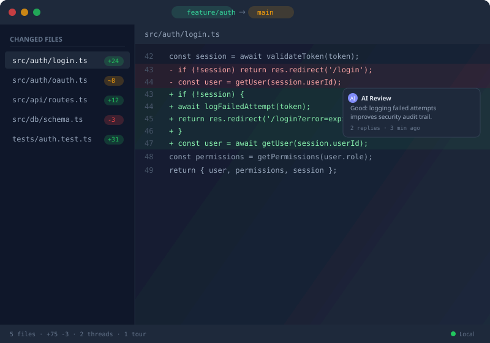

100% local · no cloud · no telemetry
Visual git diff
in your browser.
Compare branches, files, and commits with a fast, browser-based viewer. AI-supported code review, persistent threads, GitHub & Bitbucket sync.

7
Install channels
3
Platforms
0
Data leaves your machine
MIT
Open-source license
What it does
A focused tool for reviewing branch-level changes locally.
File-level branch diff
Compare via blob hash to skip files with identical content, regardless of commit ancestry.
AI-supported review
Pipe diff context to any model, import its review. Resolve threads with autonomy.
Persistent sessions
Threads, comments, and tours survive across machines via repo fingerprint.
Fast even on huge PRs
File-level virtualization, lazy diffs on viewport intersection, dynamic syntax highlighting.
GitHub & Bitbucket sync
Push review threads upstream as PR comments. Reply locally, sync remotely.
No cloud, no telemetry
SQLite-backed, all local. Your code never leaves your machine.
Install
Pick your platform. All channels are kept in lockstep — same version everywhere.